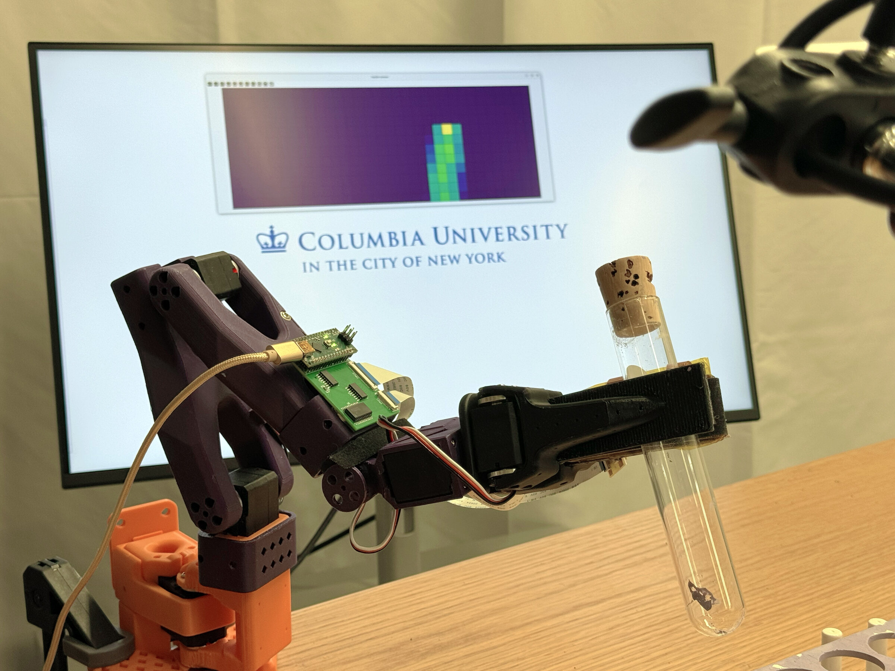

Giving robots a sense of touch.
LeRobot has made low-cost robot learning widely accessible, but its policies are still blind to contact. We add FlexiTac tactile sensing to the SO-100/SO-101 platform and find that even a modest amount of touch meaningfully lifts success rates on contact-rich manipulation across four policy families: ACT, Diffusion Policy, Pi0.5, and SmolVLA.

* Equal contribution
Columbia University
The missing modality.
In recent years, open-source robot learning has exploded in popularity. LeRobot now packages datasets, imitation-learning baselines, and low-cost hardware like the SO-ARM100/101 that allows anybody with a laptop and a few hundred dollars worth of parts to access the cutting-edge of manipulation research. The latest vision-language-action models such as Pi0.5 and SmolVLA plug directly into this stack.
Yet almost all of this progress is driven by cameras. The robot can see the scene but does not feel it. For tasks where vision is limited or where touch is essential, such as inserting a tube into a rack, aligning a peg, or finding pens in a cluttered bag, the policy is crippled and cannot view key aspects of the interaction itself. When the grasp slips or the object hides behind the gripper, the camera-only policy has nothing left to reason over.
To us, this is a glaring gap in the field. We believe that touch is a critically missing piece, and wanted to know how much it actually matters once you add it to the standard LeRobot pipeline.
A drop-in tactile path.
Our setup makes minimal changes to the existing LeRobot pipeline. We replace the SO-100 (or SO-101) stock jaw with a tactile gripper
built around the FlexiTac
sensor, and we extend LeRobot's dataset and policy interfaces with a single
observation.tactile.* stream that all four policies consume
through the same schema.
On the policy side, we add one small hook per architecture. ACT, Pi0.5, and SmolVLA receive tactile maps as a handful of extra transformer tokens, while Diffusion Policy folds them into its global conditioning vector. Everything else stays the same and is plug and play.
For each task we collect paired datasets with and without tactile input, train matched policies from the same checkpoints, and evaluate on held-out trials. The documentation has the full command list and hardware guide.
What touch unlocks.
We evaluate over three different tasks, with four types of policies each. For every task, we report tactile vs. no-tactile success rates, a sped-up long rollout (10× speed), a short real-time clip (1× speed), and a typical no-tactile failure (2× speed).
A few technical observations.
- The biggest gains came on the in-bag pen retrieval task, where the camera is completely unable to see what the gripper is reaching for. For illustration, vision-only ACT got 7 out of 30 but scored 23 out of 30 with tactile information. The peg and tube tasks also showed consistent improvements across every policy we ran on them.
-
The same
observation.tactile.primarystream improved every policy we tested it on, across architectures from ACT (a small encoder-decoder transformer) up through Pi0.5 (a large VLA). This suggests that tactile information is valuable across a wide range of policies. - Small tactile token counts are generally enough to improve performance. ACT and SmolVLA use 4 tokens while Diffusion Policy uses a single 64-dim chunk, and Pi0.5 uses 32 tokens. Generally, increasing past the per-model default did not improve success, but for tasks that rely heavily on tactile feedback, raising the number of tactile tokens (or DP chunks) can help.
-
Pi0.5 needs a full fine-tune. Action-expert-only and LoRA both produced low
success rates. The recipe that converged used a learning rate of
2.5e-5, while the same setup with learning rate5e-5failed to converge.
Build it yourself.
Cite this work.
Please cite this work as
Naian Tao, Yifan He*, Wesley Maa*, Binghao Huang, Yunzhu Li. "LeFlexiTac: Giving Robots a Sense of Touch." Columbia University RoboPIL Blog, 2026.
Or use the BibTeX citation:
@article{tao2026leflexitac,
author = {Naian Tao and Yifan He$^*$ and Wesley Maa$^*$ and Binghao Huang and Yunzhu Li},
title = {{LeFlexiTac}: Giving Robots a Sense of Touch},
journal = {Columbia University RoboPIL Blog},
year = {2026},
note = {\url{https://tna001-ai.github.io/tactile-lerobot-website/}},
}